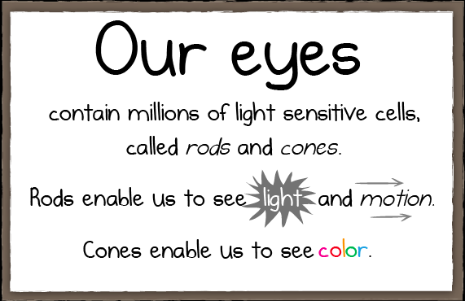

Fatos sobre o Stomatopoda
Informações gerais
A Stomatopoda é popularmente conhecida como Lacraia-do-mar, Tamarutaca, Esquila ou Lagosta-boxeadora.

| Reino: | Animalia |
|---|---|
| Filo: | Arthropoda |
| Subfilo: | Crustacea |
| Classe: | Malacostraca |
| Subclasse: | Hoplocarida |
| Ordem: | Stomatopoda Latreille, 1817 |
Fato curioso:
Esse é o animal que possui a melhor visão de cores. Equanto os olhos humanos possuem 3 tipos de receptores de cores primairias (Verde, Azul e Vermelho), a Stomatopoda enxerga 12 cores primárias
- Wikipédia
- The Oatmeal